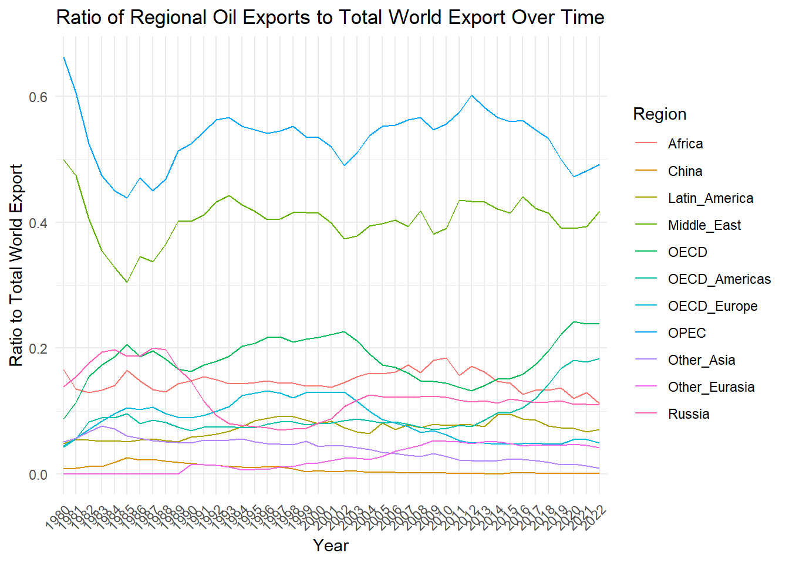
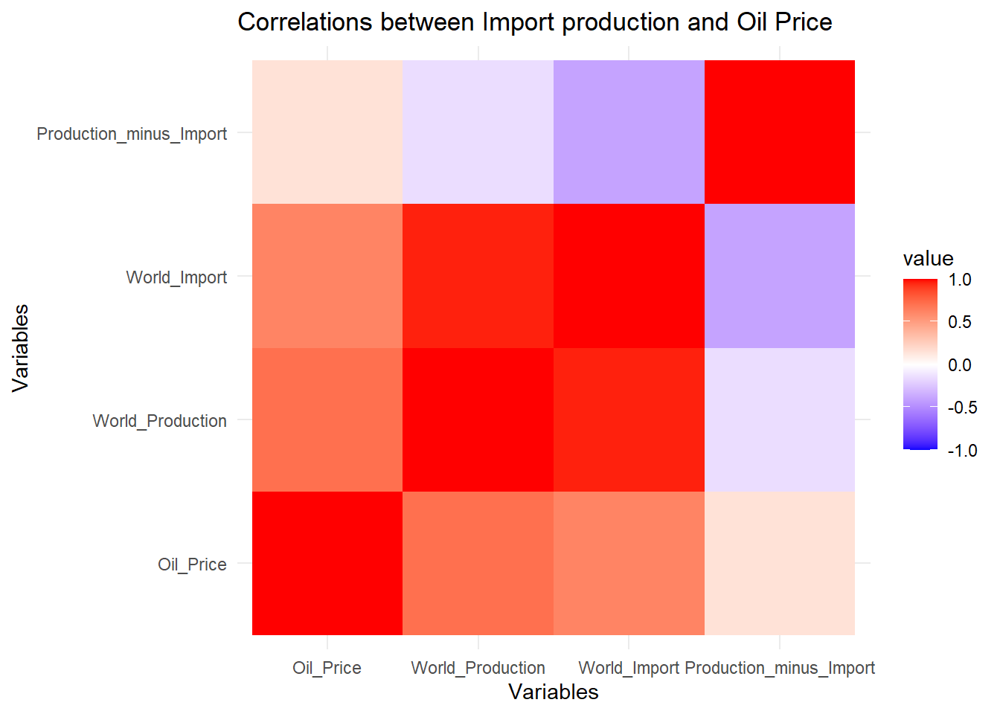

3.1 Ratio of Regional Oil Exports to Total World Export
Code
library(ggplot2)library(dplyr)library(tidyr)library(readr)data <-read_csv("ASB2023_all/T52_pruned.csv")data[,-1] <-lapply(data[,-1], function(x) as.numeric(gsub(",", "", x)))total_world_data <-filter(data, Region =="Total_world")data <-filter(data, Region !="Total_world")ratios <- datafor (year innames(data)[-1]) { ratios[[year]] <- data[[year]] / total_world_data[[year]]}ratios_long <-pivot_longer(ratios, cols =-Region, names_to ="Year", values_to ="Ratio")ggplot(ratios_long, aes(x = Year, y = Ratio, group = Region, color = Region)) +geom_line() +theme_minimal() +labs(title ="Ratio of Regional Oil Exports to Total World Export Over Time",x ="Year",y ="Ratio to Total World Export") +theme(axis.text.x =element_text(angle =45, hjust =1))

We used a stacked bar chart to compare the relationship between regional and organizational oil export volumes and the total world oil export volume. Compared to using simple bar or line charts, this approach not only informs us about the historical oil export volumes of regions and organizations but also shows the proportion of these exports in the world’s total oil exports. Understanding both aspects is crucial for analyzing oil prices, as the amount of oil exported determines the influence of a region or organization on global oil prices. However, knowing the export volume alone is insufficient. For instance, while OPEC’s oil exports in 2022 increased compared to 1980, its share in the global oil export market has declined. By comparing the export volumes of other regions, we found that OECD’s oil exports have been increasing annually. This can be attributed to two main reasons. First, since 2010, the maturation of shale oil extraction technology in the United States has turned it into a major oil exporter, thereby encroaching on OPEC’s market share. Second, for political and security reasons, the OECD, led by the United States, intentionally reduced its reliance on oil imports from OPEC countries and gradually shifted to purchasing oil from other regions. Interactive graphics created with D3 make it easier and clearer for us to identify these trends, thereby assisting us in conducting a more objective and accurate analysis of other aspects.
3.2 Time Series Analysis
Code
library(readxl)library(ggplot2)library(tidyr)oil_price <-read_excel("ASB2023_all/T74.xlsx", skip =2)oil_price <- oil_price[1:5, ]oil_price <- oil_price[-2, ]year <-c("Type", seq(1972, 2022))oil_price <-rbind(year, oil_price)colnames(oil_price) <- oil_price[1, ]oil_price <- oil_price[-1, ]oil_price$Type <-c("Nominal oil price", "Nominal price adjusted for exchange rates", "Nominal price adjusted for inflation", "Nominal price adjusted for inflation and exchange rates")long_oil_price <-pivot_longer(oil_price, cols =-Type, names_to ="Year", values_to ="Price")long_oil_price$Year <-as.numeric(long_oil_price$Year)ggplot(long_oil_price, aes(x = Year, y =as.numeric(Price), group = Type)) +geom_line() +facet_wrap(~Type) +theme_minimal() +labs(title ="Oil Price Trends", x ="Year", y ="Price ($/b)")
The top left graph shows the nominal price of oil without any adjustments. There is a general upward trend with some fluctuations. The top right graph adjusts the nominal price for exchange rate fluctuations. The overall trend is similar to the nominal price trend, with slight differences in the peaks and troughs, indicating the impact of exchange rates on oil prices. When adjusted for inflation, the price trends show less dramatic growth over time, suggesting that some of the increases in nominal price can be attributed to inflation. The early 1980s peak is much more pronounced in this graph compared to the nominal price, indicating that the real value of oil was particularly high during that period. The bottom right graph combines both adjustments for inflation and exchange rates, providing a more comprehensive view of the real oil price trends. The trend is smoother than the nominal graph but shows significant peaks and troughs that correspond with significant historical events affecting the oil market. The price trends generally follow the same patterns across all facets, which suggests that the adjustments for exchange rates and inflation do not dramatically alter the overall shape of the trends, while the trends in oil prices show significant volatility, with notable increases during periods of geopolitical tension or economic events that disrupted oil supply or increased demand, such as 1973-1974 Oil Crisis, 1979-1980 Iranian Revolution and Iran-Iraq War, 1986 Oil Price Collapse, 1990-1991 Gulf War, Late 1990s Asian Financial Crisis, 2000s Energy Crisis, 2008 Financial Crisis, and 2020 COVID-19 Pandemic.
3.3 Price Analysis of Different Petroleum Products in the US Gulf
Code
product <-read_excel("ASB2023_all/T76.xlsx", skip=2)[1:4, ]product <- product[-1,]long_product <-pivot_longer(product, cols =-1, names_to ="Year", values_to ="Price")colnames(long_product) <-c("Product", "Year", "Price")ggplot(long_product, aes(x = Year, y = Price, color = Product)) +geom_point() +facet_wrap(~ Product, scales ="free_y", ncol =1) +labs(title ="Yearly Spot Prices of Petroleum Products in US Gulf",x ="Year",y ="Spot Price ($/b)") +theme_minimal() +theme(axis.text.x =element_text(angle =90))
The prices of all three products exhibit similar fluctuations over the years, reflecting the volatile pattern of oil prices in the above time series analysis. Gasoline and Gasoil exhitbit similar prices over the years, while Fuel oil tends to have the lowest price points. This pattern can be explained by the following reasoning: while Gasoline and Gasoil are predominantly used for transportation, a sector that experiences relatively consistent and growing demand, Fuel oil’s usage is more niche and is being increasingly replaced by other fuels due to environmental concerns, which suppresses its price. Also, Gasoline and Gasoil require more complex refining, which is more expensive. On the other hand, Fuel oil, being a heavier product, requires less refining. There are notable peaks and troughs which might correspond to significant global events, changes in market dynamics, or policy decisions that impacted oil prices. Price spikes may align with events that disrupt supply, such as geopolitical conflicts in oil-producing regions (e.g., the Gulf War, sanctions on oil-producing countries), natural disasters affecting production (e.g., hurricanes hitting the Gulf Coast), or decisions by oil-producing countries to cut production. Economic booms lead to higher demand for energy, driving up prices, while recessions can cause a drop in demand and prices. The global financial crisis of 2008, for example, saw a sharp decrease in commodity prices, including oil. Implementation of environmental policies or changes in subsidies for fossil fuels can impact prices. For instance, the adoption of cleaner energy technologies and stricter emission regulations can reduce demand for certain oil products, affecting their prices.
The sudden drop in demand due to worldwide lockdowns and travel restrictions caused a historical drop in oil prices. Here we use side-by-side box plots to explore the impact of the COVID-19 pandemic on oil prices. The oil prices appear to be higher and less volatile during the pre-pandemic period, with a narrower interquartile range, indicating less variability in prices. The median price is within the upper half of the IQR, suggesting a slight skew towards higher prices within this period. There are no visible outliers, indicating that oil prices did not experience extreme deviations from the general price levels during this period. During the pandemic period, the median oil price is notably lower than the pre-pandemic period, which reflects the significant impact of the pandemic on reducing oil prices. The IQR is wider in this period, suggesting increased volatility in oil prices during the pandemic. The presence of the outlier below the lower whisker indicates that there were instances of extremely low prices. In the post-pandemic period, the median oil price has increased from the pandemic period, suggesting a recovery in prices. The IQR is also wide, which indicates that the volatility continues, albeit with generally higher prices than during the pandemic. There are no outliers visible in the post-pandemic period, suggesting a stabilization of prices without extreme peaks or troughs. Overall, the graph shows a clear drop in median prices and an increase in volatility during the pandemic, followed by a recovery in the post-pandemic period.
In late 2016, OPEC and non-OPEC oil-producing countries (known as OPEC+) agreed to cut oil output in an effort to end a global oil supply glut and boost prices. The pre-policy oil prices have a wide distribution, indicating variability in oil prices before the production cut agreement. There’s a noticeable peak around the 40 to 50 USD price range, suggesting that a significant number of oil price observations fell into this bracket. The post-policy oil prices exhibit a shift to the right and appear to be bimodal. This might indicate that the policy led to increased prices. Both distributions have a significant range, but the pre-policy distribution shows that the prices are more spread out across different values and have greater volatility. There is a big area of overlap between the two distributions in the 40 to 60 USD range. This indicates that while the policy shifted prices upwards, some of the pre-policy price range remained common post-policy.
3.6 Correlations Between Various Economic Indicators and Oil Prices
The matrix shows a strikingly high correlation of 0.989 between oil prices and petroleum exports, denoted by a strong upward trend in their scatter plot. This is expected, as higher oil prices would naturally boost the revenue from exports of petroleum, assuming export quantities remain relatively stable. The correlation between oil prices and current account balances is also robust at 0.872, indicating that the current account balances of OPEC members are strongly associated with oil prices. Higher oil prices typically translate into greater export revenues, contributing positively to the current account. The real GDP growth rate shows a weak correlation with oil prices (0.214). The low value suggests that the economic growth rates of OPEC members, as measured by real GDP growth, may not have a strong direct linear relationship with oil prices. In essence, the scatter plot matrix highlights that oil prices have a substantial and statistically significant correlation with petroleum exports and current account balances, which are critical economic parameters for oil-exporting countries. The real GDP growth rate’s connection to oil prices appears to be much less pronounced.
3.7 Multivariate Analysis of the Impact of Production Factors
Code
total_world_production <-read_excel("ASB2023_all/T35.xlsx", na ="na", skip =2)total_world_production <- total_world_production[1:74, ]colnames(total_world_production)[1] <-"Region"total_world_production <-filter(total_world_production, Region =="Total World")selected_columns <-c("Region", as.character(1983:2022))total_world_production <- total_world_production[, selected_columns, drop =FALSE]total_world_import <-read_excel("ASB2023_all/T56.xlsx", na ="na", skip =2)total_world_import <- total_world_import[1:74, ]colnames(total_world_import)[1] <-"Region"total_world_import <-filter(total_world_import, Region =="Total world")selected_columns <-c("Region", as.character(1983:2022))total_world_import <- total_world_import[, selected_columns, drop =FALSE]oil_price <-read_excel("ASB2023_all/T72.xlsx", na ="na", skip =50)oil_price <- oil_price[1:30, ]colnames(oil_price)[1] <-"Region"oil_price <-filter(oil_price, Region =="OPEC - ORB")import_data <- total_world_import[2:40] price_data <- oil_price[2:40] production_data <- total_world_production[2:40] prod_minus_import_data <- production_data - import_datacombined_data <-data.frame(Oil_Price =as.numeric(price_data),World_Production =as.numeric(production_data),World_Import =as.numeric(import_data),Production_minus_Import =as.numeric(prod_minus_import_data))cor_matrix <-cor(combined_data, use ="complete.obs")library(ggplot2)library(reshape2)cor_melted <-melt(cor_matrix)ggplot(data = cor_melted, aes(Var1, Var2, fill = value)) +geom_tile() +scale_fill_gradient2(low ="blue", high ="red", mid ="white", midpoint =0, limit =c(-1,1)) +theme_minimal() +xlab("Variables") +ylab("Variables") +ggtitle("Correlations between Import production and Oil Price")

Note: The sum of all line weights in the graph may exceed 1, as there might be overlaps between the organizations and regions listed. For example, OPEC may include most countries in the Middle East. We believe that countries with a larger relative share of crude oil exports in the world’s total exports have a greater impact on global oil prices. To understand the share of crude oil exports from various regions in the world’s total exports, we created this line graph, which includes the proportion of crude oil exports from major oil-exporting countries over the years. We found that OPEC has always been the largest oil-exporting organization, but its share in the world’s oil exports has been declining in recent years. On the other hand, the share of OECD’s oil exports in the world’s total exports has been increasing. This tells us that when analyzing data from 20 years ago, the focus should be on OPEC, but for more recent data, more attention may need to be given to emerging oil-exporting organizations like the OECD.
3.8 Multivariate Analysis of the Impact of Production Factors
The crossing lines between Oil Price and Oil Production suggest that the relationship between oil production and price isn’t consistent across the data points. Similarly, the lines between Oil Price and Oil Demand show varying trends, indicating that the price of oil doesn’t always move in tandem with demand. The Biofuel Production and Natural Gas Production axes show a wider spread of the lines, indicating varying levels of production across the data points. The relationship between these variables and oil prices is less clear, but there appears to be less direct correlation, as the lines do not show a consistent pattern when crossing from Oil Price to Biofuel Production and Natural Gas Production. There is a noticeable crisscrossing of lines across all variables, which highlights the complexity and potential interactions between these factors. It suggests that the impact on oil prices is multi-faceted and not dependent on a single factor. In conclusion, this parallel coordinates plot illustrates the complexity of the factors that impact oil prices. It suggests that oil prices are influenced by a combination of production, demand, and possibly the introduction of alternative energy sources, with no single factor consistently dominating the price movement. The varied crossing points of the lines suggest that these relationships are not linear and are likely influenced by a multitude of other economic, geopolitical, and market-specific factors not captured in this plot alone.
3.9 Interplay of Tax Policies and GDP Growth on Oil Price Segments
It appears that with tax cuts, oil prices tend to be predominantly in the Medium and High price categories. This representation suggests that tax cuts might be associated with a range of price levels but are less often associated with the lowest oil price category. For tax increases, the plot shows a more significant presence in the High oil price category across Low Growth and Moderate Growth categories. This could imply that tax increases aren’t necessarily more likely when oil prices and GDP growth are higher, possibly as a fiscal response to additional revenue from higher oil prices. In the Low Growth GDP category, there’s a substantial area in both the Medium and Low oil price categories, indicating that low GDP growth coincides with low oil prices in this dataset. For Moderate Growth, the distribution across oil price categories is relatively even, with High oil prices being slightly more prevalent. Interestingly, in the High Growth GDP category, the plot suggests a balanced distribution across the Medium and High oil price categories, with a smaller presence in the Low category. This suggests that higher economic growth may correlate with higher oil prices.
3.10 Correlations between Dirty Tanker Price and Oil Price
Code
library(ggplot2)library(reshape2)oil_price <-read_excel("ASB2023_all/T72.xlsx", na ="na", skip =50)oil_price <- oil_price[1:30, ]colnames(oil_price)[1] <-"Region"oil_price <-filter(oil_price, Region =="OPEC - ORB")selected_columns <-c("Region", as.character(2011:2022))oil_price <- oil_price[, selected_columns, drop =FALSE]dirty_tanker_price <-read_excel("ASB2023_all/T62.xlsx", na ="na", skip =3)dirty_tanker_price <- dirty_tanker_price[1:8, ]colnames(dirty_tanker_price)[1] <-"Region"columns_to_remove <-seq(2, 24, by =2)dirty_tanker_price <- dirty_tanker_price[, -columns_to_remove, drop =FALSE]dirty_tanker_price <- dirty_tanker_price[-2, ]new_column_names <-c("Region", as.character(2011:2022))colnames(dirty_tanker_price) <- new_column_namescombined_df <-rbind(dirty_tanker_price, oil_price)rownames(combined_df) <- combined_df$Regionregion_names <- combined_df$Regioncombined_df$Region <-NULLtransposed_df <-t(combined_df)transposed_df <-as.data.frame(transposed_df)colnames(transposed_df) <- region_namesrownames(transposed_df) <-colnames(combined_df)correlation_matrix <-cor(transposed_df)cor_matrix <-cor(transposed_df)melted_cor_matrix <-melt(cor_matrix)ggplot(data = melted_cor_matrix, aes(Var1, Var2, fill = value)) +geom_tile() +geom_text(aes(label =round(value, 2)), size =4, vjust =1) +scale_fill_gradient2(low ="blue", high ="red", mid ="white", midpoint =0, limit =c(-1,1), space ="Lab", name="Pearson\nCorrelation") +theme_minimal() +theme(axis.text.x =element_text(angle =45, vjust =1, size =12, hjust =1),axis.text.y =element_text(size =12)) +labs(x ='', y ='', title ='Correlations between Dirty Tanker Price and Oil Price')
We’ve explored some interesting findings by creating a correlation matrix heatmap of dirty tanker prices and oil prices across different global regions. As anticipated, there is a positive correlation between oil prices and dirty tanker prices in most areas. Interestingly, the Middle East region exhibits a negative correlation between dirty tanker prices and oil prices. From our previous results, we know that there is a strong positive correlation between oil prices and export volumes. Therefore, when oil prices rise, export volumes also tend to increase, boosting the global demand for oil. This allows the Middle East, as the world’s leading oil-exporting region, to offset the increased transportation costs caused by the rise in oil prices